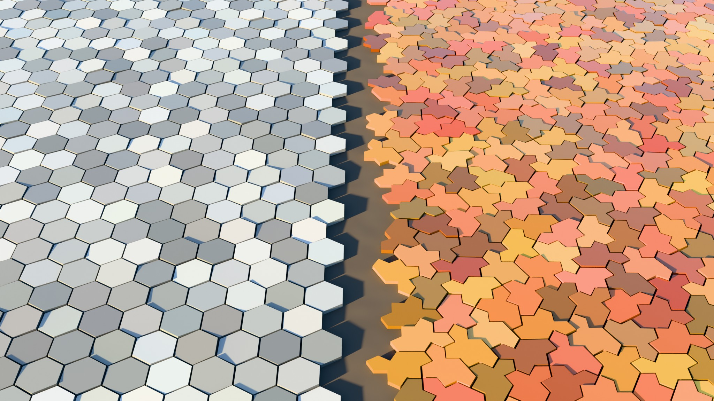

Computer graphics
Using aperiodic monotile patches for scenes, textures, meshes, and sampling studies.
The problem with repeats
Every graphics artist knows the failure mode: a tiled texture or instanced grid looks fine up close, then the camera pulls back and the repetition snaps into view — visible seams, moiré shimmer, wallpaper patterns marching across the frame. The classic fixes all trade something away. Larger textures cost memory; randomized scatter loses structure and is hard to make deterministic; blend-based tiling blurs detail.
An aperiodic monotile patch attacks the root cause. The geometry itself is mathematically incapable of translational repetition,[2] yet it is a single instanced shape — one mesh, one material slot, one draw-call strategy — and every placement is deterministic and seed-stable. You get grid-like production economics with guaranteed non-repetition.[27]

Same material, different geometry
The split render above makes the argument visually: identical glazed-ceramic material, identical sun, one seam. The hexagonal floor on the left is calm but relentlessly repetitive — the eye finds rows instantly, and at render scale those rows become aliasing bands. The Spectre floor on the right has the same tile density and the same manufacturing simplicity (one shape!), but every neighborhood is unique. Nothing marches; nothing bands.


Workflows
- Environment scatter and grounds — instance one tile mesh over patch transforms (CSV/JSON export) in Blender, Houdini, Unreal, or Three.js; the renders on this page use exactly this pipeline.
- Texture synthesis — bake a patch to a texture whose autocorrelation has no lattice peaks; useful for anti-moiré hatching, stippling, and decals.[27]
- Meshes and subdivision — clipped SVG/GLB patches as base meshes for relief, displacement, and parametric surface studies.
- Sampling studies — tile centroids as deterministic non-periodic sample points; see Signal processing and imaging.
Because tile IDs are stable across regenerations, look-dev iterates safely: change the palette, the material, or the displacement while the layout stays pinned. The interface between aperiodic and periodic regions can even be controlled explicitly when a scene needs both.[18]
See also
Moiré and aliasing, Design, art, and architecture
Categories: Applications